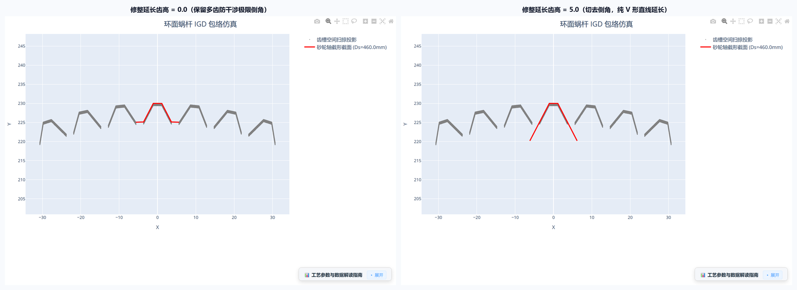

6.2 案例二：直线齿面零螺旋角蜗杆截形与修整路线
本案例基于零件库中的直线齿面规格 Sample_A_110，说明当产形齿轮 螺旋角 β (°) = 0 且选用 直线齿面齿轮 时，参数配置特征、直线夹角检验项及 修整延长齿高（0.0 vs 5.0 mm）对砂轮修整与机床防干涉路线的工艺影响。
一、直线齿面与零螺旋角参数特征（Sample_A_110）
从 工具 零件库 点击 导入 载入 Sample_A_110，其核心区别于渐开线工况的配置如下：
- 齿轮齿面类型：
直线齿面齿轮 - 零螺旋角设置：
螺旋角 β (°) = 0°、主界面砂轮安装倾角 = 0.0°（虚拟产形轮导程pz = ∞直齿） - 基本规格：
法向模数 Mn = 3.0 mm、法向压力角 αn (°) = 28.9°、蜗轮齿数 Z2 = 60、蜗杆头数 Z1 = 1 - 中心距与面宽：
中心距 = 110.0 mm、蜗杆分度圆直径 d1 = 40.0 mm、蜗轮面宽 B = 34.0 mm - 齿厚与齿高：
蜗杆法向齿厚中值 Sn = 4.1 mm、蜗杆齿顶高 ha = 1.85 mm、蜗杆全齿高 h = 4.81 mm、砂轮外径 Ds = 460.0 mm、参与啮合齿数 = 7
二、实算结果与直线齿面专属检验项
直线齿面模式下，包络模块除输出常规中心距与变位系数外，还会额外输出齿轮齿槽实际物理直线夹角用于现场量具与刀具校对：
| 输出指标 | 实算数值 | 工程含义 |
|---|---|---|
| 理论与磨削中心距 | a = 110.000 mm，磨削中心距 247.040 mm |
砂轮相对齿轮偏置距 Xc = 137.040 mm |
| 虚拟产形轮与变位 | r2 = 90.000 mm，rb = 78.792 mm，x = 0.1849 |
正变位匹配给定 Sn = 4.100 mm |
| 共轭匹配角 | 导程角 γ1 = 4.301°，β = 0.000°，Σ = 4.301° |
零螺旋角直齿条件下安装摆动角直接等于 γ1 |
| 根切与顶隙校核 | df = 176.300 mm，dsap = 176.800 mm（db = 157.584 mm） |
良好：无根切，工作齿侧完整平滑；装配顶隙标准匹配 |
| 单侧直线夹角 | 端面（Z = 0）与法向截面单侧直线夹角均为 27.205° |
单侧直齿齿面相对对称中心线的物理夹角，用于量测校准 |
三、对比实验：修整延长齿高 = 0.0 vs 5.0 mm（工艺路线分水岭）
在同一套 Sample_A_110 参数下，分别设置 修整延长齿高 = 0.0 mm 与 5.0 mm 计算砂轮截形，对照结果如下：

- 工作段几何不变性：两组计算中的理论中心距（
110.000 mm）、磨削中心距（247.040 mm）、变位系数（0.1849）与单侧直线夹角（27.205°）完全一致，变更修整延长齿高不会改变中间有效包络工作齿形。 - 路线 A（
修整延长齿高 = 0.0 mm）——自带防干涉倒角：- 左图可见软件在砂轮齿根边缘保留了由
7齿扫掠自然形成的防干涉极限倒角； - 机床加工路线：机床只需按标准四轴联动加工即可，依靠砂轮根部自带倒角自动削薄蜗杆两端齿端，直接实现多齿无干涉啮合。
- 左图可见软件在砂轮齿根边缘保留了由
- 路线 B（
修整延长齿高 = 5.0 mm）——纯 V 形直线延长：- 右图可见软件切除了防干涉极限倒角，改为沿纯 V 形主直线向下延长
5.0 mm； - 机床加工路线：砂轮修整极其简单（全直边），但磨削蜗杆两端时必须由工艺人员在 CNC 程序中额外增加 Z / C 轴减薄修缘动作，否则蜗杆两端入口/出口处将发生干涉顶刀。
- 右图可见软件切除了防干涉极限倒角，改为沿纯 V 形主直线向下延长
- 主界面编程联动：在
磨削参数基本参数中对应设定蜗轮加工角度 = 60.0°、砂轮安装倾角 = 0.0°与中心距 = 110.0即可同步导出磨削.SPF程序。